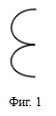

Беседа 3008 от 3877 · Беинса Дуно
Опитване, проверяване и прилагане
Отче наш.
Имате ли зададена тема? – Четете.
Пишете: Защо глупавият човек. /Прочете се темата: „Предпазливост и страх.“/
Понякой път вие разсъждавате по следния начин.
Дайте ми долно „до“. Може да вземем кой да е тон и той е все „до“. Който и да е тон, той е все „ре“. Но то е така, когато човек е вещ в музиката. Когато има една определена точка, от тази точка измерва пространството. За да мериш, трябва да имаш една основна точка, отдето да започнеш. Оттам ще измериш какво място си извървял. Ако нямаш тази точка, няма да знаеш колко място си извървял. Така. Сега вземете „до“. Ако го премерите с определена точка в музиката, ще намерите, че в дадения случай липсва едно трептение. /Учителят пее „до“ и с напрежение тона „до“./ Каква е разликата /Учителят пее/ „до“ /Учителят пее/ напрежение; „ре“ движение /Учителят пее/. „До“ – ти искаш да направиш нещо, напрягаш се. Седиш, искаш да идеш някъде, напрягаш се, то е „до“. Искаш да идеш някъде, пък не можеш. Значи, изходно положение, тръгнеш. Докато ти мислиш да тръгнеш или да не тръгнеш, най-после решаваш. Като вземеш първата точка, то е движението, става „ре“.
Сега казвате: „Предпазливост и страх.“ Вие не влизате в разсъждение. Предпазливостта е процес. Ти си обмислил нещо, искаш да направиш нещо, мислиш да започнеш нещо. Предпазлив си всякога, когато искаш да направиш нещо. Страхът е вече една свършена работа. Вече загазил си и мислиш как да излезеш от туй затруднение. Човек загазва, затуй се явява страхът. Понеже първоначално си имал предпазливост, понеже веднъж си загазил, сега вторият път предпазлив си, да не би като първия път да загазиш. Предпазливостта вече те предпазва, да бъдеш внимателен, да не би някой елемент да не си взел предвид. Да не се роди в живота ти нещо или в мислите ти, или в чувствата ти, или в постъпките ти нещо, което да те спъне. Страх се ражда. Щом се роди страхът, нещо е свършено. Запример, ако детето е яло от сладкото в гърнето, когато майката влезе в къщи и се приближи при гърнето, сърцето на детето тупа. Мисли какво да прави. След туй, туй дете ще намери някаква работа, има движение – „ре“. Страхът започва да те кара да излезеш из вратата навън. /Учителят пее./ „Ре“, движение, из вратата навън. Какво разбирате? Аз разбирам, гърнето е барано. Че може майката да употреби пръчката. Тогава имаме движение навън из вратата и се избягва новото пение. Защото майката става капелмайстор. Кой път ще хване сега? В кой път трябваше да се изяде сладкото? Майката като удря, употреби пръчката наляво, надясно. Тя иска да каже с тия удари, че детето трябваше да попита ума си, трябваше ли да яде сладкото, трябваше да попита сърцето си, трябва ли да го яде. И като попиташ двамата, те ще кажат: „Трябва да попиташ майка си.“ Тогава имаме такт три четвърти. Четирите къде е? Четирите е пръчката. Какви движения са тези? Движения, в които майката е умна, показва, че като удря, да изхарчи най-малко енергия. Ако изхарчи много голяма енергия, след туй майката усеща болка в ръката. Щом майката прекали, заболи я ръката. Този закон навсякъде действува. Ти казваш някому една дума. В дадения случай някой направи една малка погрешка пред теб. Ти искаш да го поправиш, но не употребяваш справедливостта, удариш повече. Той като си замине, усещаш, че не си постъпил справедливо. Майката, заболи я ръката – прекалила е.
Та казвам: Когато дойде едно страдание вътре във вас, показва, че по закона на сърцето не сме постъпили справедливо, по закона на вашата мисъл. Когато не постъпваме справедливо, изгубва се светлината, настава тъмнина.
Та казвам: Трябва да разчленявате темите, които ви се дават. Напрежението какво е? Вие имате желание да постигнете нещо – това е едно напрежение. По кой начин ще вземете „до“, ако имате напрежение? Напрежението страх ли е или предпазливост? Напрежението се ражда от известни желания отвътре. Желанието е една вътрешна възможност. Тебе ти трябва един извор. Ти желаеш, не е лошо, че желаеш. Всичката погрешка може да излезе от желанието. Какъв път ще избереш от постижението на твоето желание? Запример, ти искаш да станеш музикант, значи имаш тази дарба. Какъв път ще избереш за музиката? Или искаш да станеш художник, какъв път ще избереш за художеството? Или искаш да станеш архитект, какъв път искаш да избереш за архитектурата? Но тези са вече обективни науки. Значи ти трябва да опитваш нещата и да ги проверяваш. Каква е разликата между проверка и опит? Коя е геометрическата разлика? П О . О П. Какво ще направиш от „опе“? Захване се. Ако турите ОПЕ. Е-то откъде е взето? Онзи, гениалният, откъде му дошло на ума да създаде Е-то? Тъй да го създаде.

Вие имате едно състояние в себе си. Боли те нещо. Тази болка ти се дава да мислиш. Най-първо имаш болка в крака. То тази болка се явява в съзнанието, тя произтича от предната част на челото. Понеже мозъкът има бели нишки, оттам получаваш болката. Белите нишки са събудени. Туй съзнание, от предната част, показва къде е болката. Тази болка щом знаеш къде е, може да я лекуваш. Някой път усещаш, че ти е мъчно, че не може да я локализираш някъде болката. Да е в крака, не е; да е в пръстите, не е; да е в рамото, не е, да е лакета, не е. Усещаш, че ти е мъчно, не можеш да кажеш къде е болката, пък ти е мъчно навсякъде. А пък болката някой път става така конкретна, проявява се в някой орган, тогава трябва да намериш от коя част на мозъка ти иде. Запример, има известни болести, които се раждат от страха. Човек може да стане нервен от страх. Пък може от страх да се кали, да се приспособява на условията. Така имате на заека, от страх му се проточили ушите нагоре. Понеже е много страхлив, от туй даване на внимание ушите порасли. От всяко шумване трепва. Отдето мине, се слуша, да няма опасност, много е предпазлив. Кръвта храни ушите и те станали големи. Щом чуе шум, изправи се на краката си, гледа наоколо. Като погледне и види, че няма опасност, пак започне да пасе. Изведнъж като мръдне нещо наоколо, изправи се пак на краката и се огледа. Като някой учен човек, пак се сниши и започне да се снишава, да пасе. Мине някъде, бръсне го нещо, изправи се, разглежда като философ. Ти го гледаш и казваш: „Какво си играе заекът“? Понякой път си играе, понякой път се изправя. Той си прави комедии. Лицето му е валчесто, подскочи, изправи си ушите, обърне се на една страна, на друга страна. Много е страхлив заекът. Направи една комедия, смее се. Вследствие на това ушите му се проточили и не е станал неврастеник. Зайците имат една хубава черта в характера си, че не са неврастеници. Някой път може да се пошегуваш и ти можеш да се пошегуваш.
„До“ – напрежение /Учителят пее/. „Ре“ – движение /Учителят пее/. Сега „ми“, какво ще бъде? Казвам: В музиката понякой път трябва да свирите на два инструмента. Когато човек има едно неразположение, някакво безпокойство, музиката може да смени едно състояние. Да кажем, гневен си. Седнеш на пианото, започнеш с ръцете да удряш по клавишите. Като удря, удря по клавишите, сърди се на клавишите и понеже те издават хубаво хармонични звукове, постепенно като свири, започне да се разполага. Хубаво е понякой път да си имате мълчаливо пиано от дъска направено. Разгневиш се, посвири си. Като заяка ще направиш едно упражнение. Ще кажете: „То е глупава работа.“ Значи, глупаво е да си местиш ръцете по клавишите, без да дават звук, а е по-умно да изговориш десет, 20, 60, сто думи, които нямат смисъл. Ще кажеш: „Заяк, говедо, лисица, магаре“, после „помия, глупак“, нали се такива думи се казват, когато се гневите. Ти си изхарчил много енергия. Природата икономисва. Всичко се хроникира. Казал си „магаре“. За да изкажеш думата „магаре“, изисква се известна енергия. Веднага се записва, каква енергия се изисква за „магаре“. Кажеш друга дума, веднага се записва, колко енергия си изразходвал, за да кажеш „лисица“, „вол“, „тигър“, „помия“, ще ти турят една глоба от хиляда лева, глоба за изразходваната енергия. Казва: „Ти си изхарчил за тази енергия хиляда лева.“ Като няма да платиш, ти вече усещаш една болка. Боли те нещо. Природата казва: „Ще платиш.“ То е плащане. Сърцето плаща за ума. Не мислете, че не се плаща. Плаща се. И за доброто се плаща, и за лошото се плаща. Вие сега мислите, че като кажете на един човек една дума, не се плаща. Вие искате да кажете на един човек, че е дърво. Казвате: „Дърво.“ Умен човек сте, не изяснявате защо му казвате, че е дърво. Че не му стига умът. Вие как мислите? Ако употребите думата „дърво“, какво разбирате: Или че той не мисли, или му казвате, че трябва да го бият. Значи, една погрешка може да се изправи с дърво. Може да я изправиш, както растенията изправят своите погрешки. Казвате: Трябва да започнеш да мислиш, да те посеят вътре в земята. Тази погрешка само чрез дървото можеш да я оправиш. Ще пуснеш корени дълбоко в почвата, ще израснеш и нагоре въздухът ще те разлюлява. Като седиш няколко години в туй положение, ще забележиш какво е отношението на корените и какво е отношението на листата, и какво е отношението на природата към тебе. Казваш: „Дърво.“ Онзи казва: „Как ме наричаш дърво?“ – „Аз искам да ти кажа научно, ти си направил една погрешка, която можеш да изправиш само по начина на дървото, което спуща корените си в земята и издига своите клонища горе във въздуха, цъфти, завързва, дава плод на хората и става знатно.“ Казва: „Как смееш да ме наричаш дърво?“ То е човек, който не разбира думата „дърво“. Да допуснем сега второто положение. Кажеш: „Лисица.“ Как ще изтълкувате „лисица“? Често казвате: „Той е лисица.“ Какво разбирате под думата „лисица“? Той ти казва: „Ти си лисица.“ Лисица, който се избавя от мъчнотиите. Какво прави? Когато я гони някоя хрътка или някой копой, нахохори опашката си отзад, опашката ѝ става по-голяма и постоянно мърда опашката си на една и на друга страна и той, като иска да я хване, върви отзад в крива линия, а тя върви в права линия. Като въртиш опашката си, ти си лисица. Употребява ума си, защото ще я хване копоят за гърба и ще бъде много зле. Сега вие не разбирате. Казвате: „Ти си лисица.“ Тогава значи, тази погрешка, тази опасност, която те очаква, можеш да се избавиш само като лавираш. Лавирането какво е? Тъй лисицата лавира с опашката наляво, надясно. Но трябва да знаеш как да лавираш. Ако не знаеш как да лавираш, мъчнотията ще дойде. Какво значи „лавира“? Вие имате основния тон „ла“ и „вир“. Какво значи? „Ла“ е основен тон на движение в природата. В „сол“ вие имате движение нагоре. А в „ла“ вие имате движение надолу. Следователно, в „сол“ вие вече сте свързани с материалния свят. Напрежението от центъра на земята излиза нагоре. Всичката енергия, която „сол“ възприема от слънцето, тази енергия се предава. В „ла“ движението се обръща от слънцето към земята. „Сол“ е движение към слънцето, „ла“ е движение към центъра на земята. Като отива към центъра на земята, се превръща в „ла“. Ако вие се спрете в дадения случай, тогава ще се яви известна катастрофа вътре в живота ви. Всяко страдание произтича от спирането някъде. Ти си се спрял. Щом някъде ти се движиш по-бързо, отколкото трябва, ти пак ще страдаш. И ако се движиш по-медлено, пак ще страдаш. Ако се движиш по-бързо, пак ще страдаш. Само разликата каква ще бъде? При бавното движение, с една биволска кола ако се движиш, страданието ще бъде по-малко. Защото как да ти обърнат колата? Ако си с биволска кола, катастрофа може ли да стане? Ти като вървиш, може някой път да се обърне колата, но ако пътуваш с един автомобил, който пътува с 200, 300 километра в час, какво може да се случи с бързото движение? Има опасност. Ти ще постигнеш целта много по-скоро, но трябва да бъдеш много учен, понеже инциденти с автомобила може да се случат.
Понякой път вие бързате. За предпочитане е някои работи да ги свършите с биволски кола. Значи имаш една опасност, казваш: Бивол, /Учителят пее/, лисица, /Учителят пее/, слон, /Учителят пее/. Някой път можеш да кажеш: Слон, слон, /Учителят пее/, думата слон, после муха. Някой казва: „Каква лисица си ти.“ Ти вземи, че попей: „Лисица, лисица“.
Вие седите и мислите: „Защо Господ направил света така?“ Вие боравите с всички ваши хипотези и теории, които са прави. Във всички работи постоянно имаме спънки. Човек мисли, когато нещата се свършени. Човек не мисли, преди да свърши нещата. След като свърши, тогава започва да мисли. Тогава е свършен факт. Вървиш по пътя, удариш си крака, започваш да мислиш какво вършиш. Казваш: „Аз не трябваше да си ударя крака, кой го тури, че няма ли друго място, че там ли трябваше да го турят, какви са хора, кой ги турил, те са невежи.“ Ти разсъждаваш. А пък ти, като вървиш по пътя, трябваше да гледаш, да мислиш. Ти си тръгнал и не мислиш, търсиш своето щастие по небето. Като се удариш в камъка, казват: „Онова твое благо от небето слезе на земята.“ Сега ще ви приведа примера за онзи философ, който вървял по пътя и бил зает с една велика задача да разрешава в живота си. Блъснал се в един камък и се спрял да мисли. Казва: „Кой турил този камък?“ Търси причините, защо този камък е на пътя. Блъснал си крака, боли го кракът. Но не пита защо го боли, но търси причините. Казва: „Болката е слаба, причината е камъкът.“ Сега разсъждава: Защо турих камъка на пътя, пък и защо той се блъснал в него. Дойде другата мисъл, да дигне камъка, разсъждава, или да не го дигне. Ако го дигне, какво ще стане? Седи той и мисли. Гледа нагоре, гледа надолу, разсъждава. Бил много беден човек, от философия осиромашал човекът. Скъсани обуща, дрехи скъсани, но философствувал, разсъждавал. Казва: „Разумно е да го дигна, защото и друг човек като мене ще блъсне. Той не знае да разсъждава, ще си счупи крака. Аз ще направя едно добро, да избавя хората от едно голямо нещастие.“ Напъва се, напъва се, търкулва камъка и гледа под камъка една торба. Интересува се от торбата, какво е скрито. Гледа вътре – злато. Казва: „С какво може да ми послужи тази торба, с какво може да си услужа? Кое е право?“ Гледа: „Обуща нямах, краката ми страдаха досега.“ После гледа: „Дрехите окъсани. Срамота е от хората, трябва да се облека.“ Започва той да философствува. Взема торбата и я носи. Питам сега, ако не беше философ, ако не разсъждаваше, щеше ли да дигне камъка и да поправи своето положение? Блъснеш се в една мъчнотия, спри се да разсъждаваш, защо е турена тази мъчнотия на пътя. Тя ще стане причина да измениш своето положение. Имаш едно страдание, страдаш, мъчно ти е нещо. Някой път можеш да знаеш защо страдаш, пък някой път не знаеш защо страдаш. Има страдания чужди. Когато някой път ще умре някой човек, който ти е ближен, някой твой близък роднина, ти го обичаш, дойде на умиране, усещаш болка, чувствуваш болката му. Този човек през въздуха праща и ти по твоето радио приемаш страданието. Не си ти, който умираш, друг умира. Казва: „Защо са тия страдания?“ Този човек, който страда при умирането, той не е готов за смъртта. Казва: „Знаеш ли, че един твой роднина умира, не е готов, не иска да умре. Ти един ден искаш ли и ти да умреш като него?“ Ти страдаш, страданието всякога може да дойде. Никой не е изключен от страданието. Никой не е изключен в пътя на живота като ходи да не си удари крака някъде. Страданието ще дойде. И малки, и големи страдания ще дойдат, но всички трябва да мислите. Всяко едно страдание, ако го разгледаш туй страдание, то ще ти донесе силата, която е скрита. Под този камък ще намериш злато и обущата ще се поправят, и дрехите, и храната ще се поправи. Книги ще си купиш, пиано ще си купиш, автомобил ще си купиш, аероплан ще си купиш, ще си избереш хубаво място, дето да живееш. Вие седите и казвате, какво трябва да правите. Имате разрешението. Краката ви са един начин за разрешението на въпроса. Значи, човек е двоен. Две същества са свързани в едно същество. Пръстите на ръцете са дълги, а на краката пръстите са къси. Пръстите показват ума. Пръстите на ръката показват умственото развитие на човека. Дланта показва развитието на сърцето. Винаги дланта, вътрешната страна на дланта показва вашата чувствителност. Пръстите показват силата на вашата мисъл. Щом мисли човек, като мисли, той образува пръстите. Чрез сърцето образува дланта, чрез волята образува цялата ръка до рамото. Тъй щото умът взел участие в създаването на пръстите, сърцето взело участие в създаването на дланта и волята взела участие в създаването на ръката до рамото. Имате пръстите, това е работата, която умът свършил. Дланта е работата, която сърцето свършило и останалата ръка е работата, която волята е свършила. Както и да разглеждате въпроса, всички ония същества с хиляди години работили, за да създадат човека. Хиляди години са работили най-умните същества да създадат тялото на човека. Хиляди години са работили да се създаде сегашната форма на човешкото тяло, което имаме. Учените хора едва сега разглеждат по кой начин са градили къщата, как се диференцирали клетките. Как едни клетки създали краката, други клетки създали стомаха. Намират, че белите дробове най-после са създадени. Та казвам: Вие не сте запознати със себе си. Очи имате, не знаете как са направени очите. Език имате, не знаете как е направен езикът. Уши имате, не знаете как са направени ушите. Това са апарати. Вие отвътре има да ги изучавате. Вие сте като малките деца. Ако речете да ги барате, вие ще ги развалите. Казвам: Заболи ви пръстът. Ако ви заболи първият пръст, какво трябва да правите? Тази болка психологически произтича от задната част на главата, горе към темето. Заболи ви вторият пръст, причината е големият страх, който има у човека или на неговото съзнание. Съзнанието произтича от съвестта. От три точки може да те заболи средния пръст. Не употребяваш съзнанието, съвестта както трябва и се страхуваш повече, отколкото трябва. Или трябва да те заболи безименният пръст. Той е пръст на изкуството. Този пръст когато заболява, ти не си употребявал слънчевата енергия, зависи от предната част на главата, на челото. Ако не мислиш, ще се яви болка в средния пръст. Ако започнеш да мислиш, иде повече кръв, веднага тази болка ще изчезне. Ако ти не обичаш красивото в света, ако не си избираш думите, то е красотата, ще знаеш изящно как да говориш, да не употребяваш груби думи, направил си престъпление с този пръст. Причината е в цялата умствена област. След туй ще се яви една болка като една глоба, едно малко неразположение. Трябва да се научиш да мислиш правилно. Може да излезе цирка на третия пръст. Някой път може да се яви една болка на кутрето. Вие не знаете болката откъде иде. Малкият пръст ще ви заболи, понеже в реалния живот вие не разпределяте нещата правилно. После има друго. Ти някой път гледаш ръката и не харесваш ръката. Защо? Ти не можеш да имаш хубави пръсти, ако нямаш хубави и благородни чувства. Ти не можеш да имаш хубав среден пръст, ако не си справедлив. Ти не можеш да имаш хубав безимен пръст, ако в тебе чувството на красиво и хубаво не е развито. Пръстът ще бъде такъв. Не може и малкият пръст да бъде красив, ако ти в материалните си работи не знаеш как да имаш такт с хората. Като постъпваш справедливо, това се хроникира на тялото. И най-после, ако ти нямаш Божественото, хубавото в тебе, ти не можеш да имаш един палец, не можеш да имаш воля. Силната воля се кали, когато съзнава, че Онзи, Който създал света, Онзи, Който създал тялото, живота, който имаш, почва да се сформира палецът. По палеца ще знаеш какъв е човек, има ли религия, оценява ли с ума всичките богатства, които има, както са. Казвате: „Аз като живея добре.“ Да живееш добре, да сформираш добре дланта си. Някоя длан не е хубава. Дланта някой път може да е суха. Дланта може някой път да е влажна. Може да е корава. Някой път ръката може да стане чрезмерно мека отвътре. Кои ръце са по-хубави, сухите или влажните? Те са специални работи. Вие се спирате върху положението. Вие искате да станете един добър певец. Ти най-първо трябва да чувствуваш – имаш глас или не. Ще спреш мисълта си върху твоето гърло. Певецът трябва да мисли. Ще започнеш да мислиш най-хубавото, което имаш. За всеки човек ще мислиш хубаво. Ще бъдеш талкова внимателен, ще имаш най-деликатни отношения. Ще се отнасяш много добре с ларинкса, с гърлото си. Люти работи няма да ядеш, кисели работи няма да ядеш. Ледена студена вода няма да пиеш, много гореща вода няма да пиеш, ще бъдеш много внимателен. Като станеш, ще разтриваш гърлото, ще съсредоточиш всичката си деликатност. Онези от вас, които искат да станат певци, ще пазиш гърлото си, ще кажеш: „Колко хубаво знаеш да пееш. Я си покажи изкуството, я ми кажи какъв ангелски глас имаш.“ Поглади гърлото си. Кажеш: „Туй е глупава работа.“ Говори умното. Ти можеш да кажеш: „Колко съм неспособен, не съм даровит.“ Кое е по-хубаво, добре ли да мислиш за себе си или зле да мислиш? Ако мислиш зле за себе си, Бог те е създал едно красиво същество, Той те е създал да станеш един ангел, да развиеш ума си, сърцето си, гениален да бъдеш. Ти седиш, вземаш мястото на едно говедо, дето ходиш, с краката си ровиш земята и грешиш, и после роптаеш. Не е разумно. Сега аз ви казвам един начин да говориш на гърлото, ще попееш, ще станеш първокласен певец. Ако досега бяхте употребили, светът щеше да знае. Който пее лошо, не мисли. Всеки един звук е стъпало на една култура. Пресищане има вътре. Като плаче един човек, ще го знаеш. И като започне да плаче и като се кара, може да знаеш, ще стане ли велик човек или гениален, или е голям простак. По гласа му ще познаеш. Като минаваш някъде вечерно време, ако минаваш и мълчиш, кучето седи далеч. Щом издадеш гласа си, те те познават, дали тебе те е страх или не. Като чуят първата дума, те се нахвърлят отгоре ти. Следователно, мъчнотиите на живота ти са кучетата на природата, които като ви усетят, че сте страхливи, нахвърлят се отгоре. Мълчете! Като дойде едно страдание, кажи: „Герой съм.“ Дойде една мъчна задача, кажи: „Мога да я реша.“ Макар че не можеш да я разрешиш. Въпросът е да не кажеш: „Невъзможно е.“ Онова дете на една година, невъзможно е да дигне сто килограма, то и десет грама не може да дигне, но на две, три, на 4, 10, на 21 година това дете стане левент момък, големия товар може да го дигне. Въпрос е на време. Няма мъчнотия в света, която човек да не може да разреши, но то е въпрос на време.
Сега казвам: Започнете да мислите, не да проверяваш. Вие сте повярвали. Да опитате с мисълта си, със сърцето си проверявайте. Понеже досега със сърцето сте опитвали. Със сърцето си проверявайте, а с волята прилагайте. Опитвайте с ума, проверявайте със сърцето и прилагайте с волята.
Само светлият път на Мъдростта води към Истината.
В Истината е скрит животът!
XVIII година.
26 лекция на Младежкия окултен клас,
държана от Учителя на 28 април 1939 г., петък, 5 ч. с.
София – Изгрев.